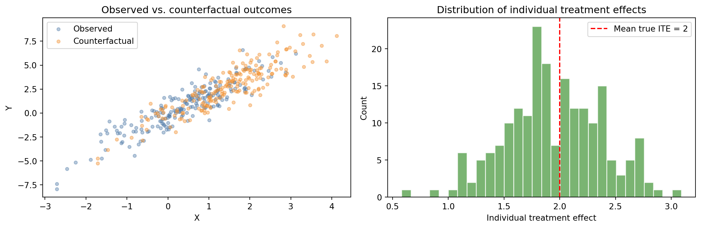

Understand what a counterfactual question is and why it sits at the top of the causal ladder
Distinguish between individual treatment effects and average treatment effects
Connect the potential outcomes framework (Rubin) with Pearl’s structural approach
Estimate a simple counterfactual using structural equations in Python
7.1 The Road Not Taken
Every decision is haunted by the road not taken.
A patient receives a medication and recovers. Would she have recovered anyway, without the medication? A student attends a selective college and goes on to a successful career. Would he have succeeded regardless — was the selection effect doing the work, not the education? A city builds a new highway and traffic congestion increases. Would congestion have been even worse without the highway?
These are counterfactual questions. They ask about worlds that did not happen. This puts them in an unusual position scientifically: you cannot observe a counterfactual. You can never see the same patient recover from the same disease twice, once treated and once untreated.
And yet counterfactual reasoning is so natural to human thought that we barely notice we are doing it. It is the basis of regret, of attribution, of moral responsibility. When a judge asks whether the defendant’s action caused the harm, she is asking a counterfactual question: would the harm have occurred anyway, absent the defendant’s action?
7.2 Potential Outcomes
Donald Rubin formalized counterfactual reasoning in statistics using the potential outcomes framework. For every unit \(i\) and every possible treatment value \(t\), there is a potential outcome \(Y_i(t)\): the outcome unit \(i\)would have if assigned to treatment \(t\).
The fundamental problem of causal inference: for any individual, you observe at most one potential outcome. The others are permanently missing — not missing by accident, but missing by the logic of time. The unit received treatment \(T_i = 1\), so you observe \(Y_i(1)\). The potential outcome \(Y_i(0)\) — what would have happened under control — is counterfactual.
The individual treatment effect for unit \(i\) is:
\[\tau_i = Y_i(1) - Y_i(0) \tag{7.1}\]
Since only one of these is observed, \(\tau_i\) can never be directly measured for any individual. Causal inference, under this framing, is a missing data problem.
The average treatment effect (ATE) averages over individuals:
This can be estimated from data under assumptions — most importantly, that treatment assignment is independent of potential outcomes, given observed covariates (the ignorability assumption).
7.3 Structural Counterfactuals
Pearl’s structural approach is equivalent to potential outcomes but starts from a different place. A structural causal model assigns each variable an equation that determines its value from its parents and an independent noise term \(U\):
\[Y = f(X, U_Y)\]
A counterfactual is computed in three steps:
Abduction: Update the noise terms \(U\) using observed evidence. This gives the specific “noise configuration” that produced the observed world.
Action: Intervene — set \(X\) to the counterfactual value.
Prediction: Compute \(Y\) under the modified model with the updated \(U\).
The noise terms carry the individual’s characteristics into the counterfactual world, ensuring consistency: the counterfactual shares the same background factors as the actual world, except for the intervention.
Code
import numpy as npimport matplotlib.pyplot as pltrng = np.random.default_rng(1)n =200# Structural equations: Y = 2*X + U_Y, X = Z + U_XU_X = rng.normal(0, 1, n)U_Y = rng.normal(0, 1, n)Z = rng.binomial(1, 0.5, n) # instrument (affects X but not Y directly)X_obs = Z + U_X # observed treatment (continuous, influenced by Z)# Heterogeneous treatment effect: true effect varies by unit (mean = 2)true_effect =2.0+ rng.normal(0, 0.4, n)Y_obs = true_effect * X_obs + U_Y # observed outcome# Counterfactual: what if everyone had X_cf = X_obs + 1 (dose increase of 1)?X_cf = X_obs +1# Hold U_Y fixed (same individual, different treatment)Y_cf = true_effect * X_cf + U_Yindividual_effects = Y_cf - Y_obs # = true_effect * 1, varies around 2fig, axes = plt.subplots(1, 2, figsize=(12, 4))axes[0].scatter(X_obs, Y_obs, alpha=0.4, s=15, color="#4e79a7", label="Observed")axes[0].scatter(X_cf, Y_cf, alpha=0.4, s=15, color="#f28e2b", label="Counterfactual")axes[0].set_xlabel("X"); axes[0].set_ylabel("Y")axes[0].set_title("Observed vs. counterfactual outcomes")axes[0].legend()axes[1].hist(individual_effects, bins=30, color="#59a14f", alpha=0.8, edgecolor="white")axes[1].axvline(2, color="red", linestyle="--", label="Mean true ITE = 2")axes[1].set_xlabel("Individual treatment effect"); axes[1].set_ylabel("Count")axes[1].set_title("Distribution of individual treatment effects")axes[1].legend()plt.tight_layout()plt.show()

Figure 7.1: Simulated counterfactual: actual vs. counterfactual outcomes under different treatment assignments.
7.4 Summary
Counterfactual questions ask about what would have happened under different conditions — they are permanently unobservable for any individual.
The potential outcomes framework defines \(Y_i(t)\) for each unit and treatment; only one potential outcome is ever observed.
The individual treatment effect \(\tau_i = Y_i(1) - Y_i(0)\) cannot be directly measured; the average treatment effect can be estimated under appropriate assumptions.
Structural counterfactuals use noise variables and the three-step abduction-action-prediction procedure to place counterfactual reasoning on a firm mathematical footing.
7.5 Further Reading
Imbens and Rubin (2015) is the comprehensive reference for potential outcomes and treatment effect estimation. Pearl (2009) covers structural counterfactuals in Chapter 7. For a more philosophical treatment, chapter 8 of Pearl and Mackenzie (2018) is accessible and thought-provoking.
Imbens, Guido W., and Donald B. Rubin. 2015. Causal Inference for Statistics, Social, and Biomedical Sciences. Cambridge University Press.
Pearl, Judea. 2009. Causality: Models, Reasoning, and Inference. 2nd ed. Cambridge University Press.
Pearl, Judea, and Dana Mackenzie. 2018. The Book of Why: The New Science of Cause and Effect. Basic Books.
Source Code
---title: "Counterfactuals"---::: {.callout-note icon=false}## Learning Objectives- Understand what a counterfactual question is and why it sits at the top of the causal ladder- Distinguish between individual treatment effects and average treatment effects- Connect the potential outcomes framework (Rubin) with Pearl's structural approach- Estimate a simple counterfactual using structural equations in Python:::## The Road Not TakenEvery decision is haunted by the road not taken.A patient receives a medication and recovers. Would she have recovered anyway, without the medication? A student attends a selective college and goes on to a successful career. Would he have succeeded regardless — was the selection effect doing the work, not the education? A city builds a new highway and traffic congestion increases. Would congestion have been even worse without the highway?These are counterfactual questions. They ask about worlds that did not happen. This puts them in an unusual position scientifically: you cannot observe a counterfactual. You can never see the same patient recover from the same disease twice, once treated and once untreated.And yet counterfactual reasoning is so natural to human thought that we barely notice we are doing it. It is the basis of regret, of attribution, of moral responsibility. When a judge asks whether the defendant's action *caused* the harm, she is asking a counterfactual question: would the harm have occurred anyway, absent the defendant's action?## Potential OutcomesDonald Rubin formalized counterfactual reasoning in statistics using the **potential outcomes** framework. For every unit $i$ and every possible treatment value $t$, there is a potential outcome $Y_i(t)$: the outcome unit $i$ *would have* if assigned to treatment $t$.The fundamental problem of causal inference: for any individual, you observe at most one potential outcome. The others are permanently missing — not missing by accident, but missing by the logic of time. The unit received treatment $T_i = 1$, so you observe $Y_i(1)$. The potential outcome $Y_i(0)$ — what would have happened under control — is counterfactual.The **individual treatment effect** for unit $i$ is:$$\tau_i = Y_i(1) - Y_i(0)$$ {#eq-ite}Since only one of these is observed, $\tau_i$ can never be directly measured for any individual. Causal inference, under this framing, is a missing data problem.The **average treatment effect (ATE)** averages over individuals:$$\text{ATE} = \mathbb{E}[Y(1) - Y(0)]$$ {#eq-ate}This can be estimated from data under assumptions — most importantly, that treatment assignment is independent of potential outcomes, given observed covariates (the *ignorability* assumption).## Structural CounterfactualsPearl's structural approach is equivalent to potential outcomes but starts from a different place. A structural causal model assigns each variable an equation that determines its value from its parents and an independent noise term $U$:$$Y = f(X, U_Y)$$A counterfactual is computed in three steps:1. **Abduction:** Update the noise terms $U$ using observed evidence. This gives the specific "noise configuration" that produced the observed world.2. **Action:** Intervene — set $X$ to the counterfactual value.3. **Prediction:** Compute $Y$ under the modified model with the updated $U$.The noise terms carry the individual's characteristics into the counterfactual world, ensuring consistency: the counterfactual shares the same background factors as the actual world, except for the intervention.```{python}#| label: fig-counterfactual-demo#| fig-cap: "Simulated counterfactual: actual vs. counterfactual outcomes under different treatment assignments."import numpy as npimport matplotlib.pyplot as pltrng = np.random.default_rng(1)n =200# Structural equations: Y = 2*X + U_Y, X = Z + U_XU_X = rng.normal(0, 1, n)U_Y = rng.normal(0, 1, n)Z = rng.binomial(1, 0.5, n) # instrument (affects X but not Y directly)X_obs = Z + U_X # observed treatment (continuous, influenced by Z)# Heterogeneous treatment effect: true effect varies by unit (mean = 2)true_effect =2.0+ rng.normal(0, 0.4, n)Y_obs = true_effect * X_obs + U_Y # observed outcome# Counterfactual: what if everyone had X_cf = X_obs + 1 (dose increase of 1)?X_cf = X_obs +1# Hold U_Y fixed (same individual, different treatment)Y_cf = true_effect * X_cf + U_Yindividual_effects = Y_cf - Y_obs # = true_effect * 1, varies around 2fig, axes = plt.subplots(1, 2, figsize=(12, 4))axes[0].scatter(X_obs, Y_obs, alpha=0.4, s=15, color="#4e79a7", label="Observed")axes[0].scatter(X_cf, Y_cf, alpha=0.4, s=15, color="#f28e2b", label="Counterfactual")axes[0].set_xlabel("X"); axes[0].set_ylabel("Y")axes[0].set_title("Observed vs. counterfactual outcomes")axes[0].legend()axes[1].hist(individual_effects, bins=30, color="#59a14f", alpha=0.8, edgecolor="white")axes[1].axvline(2, color="red", linestyle="--", label="Mean true ITE = 2")axes[1].set_xlabel("Individual treatment effect"); axes[1].set_ylabel("Count")axes[1].set_title("Distribution of individual treatment effects")axes[1].legend()plt.tight_layout()plt.show()```## Summary- Counterfactual questions ask about what would have happened under different conditions — they are permanently unobservable for any individual.- The potential outcomes framework defines $Y_i(t)$ for each unit and treatment; only one potential outcome is ever observed.- The individual treatment effect $\tau_i = Y_i(1) - Y_i(0)$ cannot be directly measured; the average treatment effect can be estimated under appropriate assumptions.- Structural counterfactuals use noise variables and the three-step abduction-action-prediction procedure to place counterfactual reasoning on a firm mathematical footing.## Further Reading@imbens2015causal is the comprehensive reference for potential outcomes and treatment effect estimation. @pearl2009causality covers structural counterfactuals in Chapter 7. For a more philosophical treatment, chapter 8 of @pearl2018book is accessible and thought-provoking.